前端基础知识。记录了在前端领域遇到的一些问题，以及解决这些问题的过程和方法。还有自己对一些知识概念的理解和领悟。
React
React Router
未装propTypes报错Cannot read property ‘array’ of undefined
react15之后prop-types被剥离开来，而react-router里面的很多写法还是react.proptypes这样肯定报错。所以有两种方案，一种是把react降到15之前（不包括15），另外一种就是把react-router升级到3.x以上版本。
为什么不直接升级到4.x因为我试用了一下发现是服务端渲染，而且一大堆配套的都要升级，因此升级到3.x是最明智的选择。
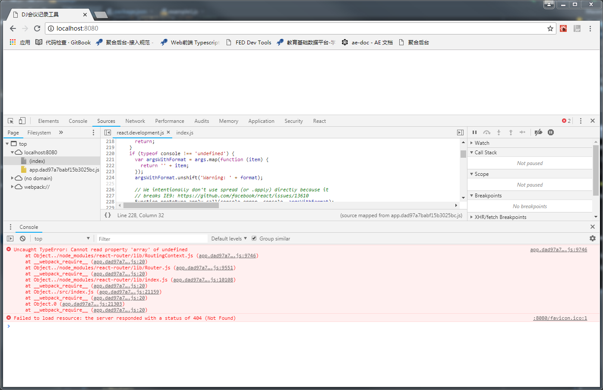
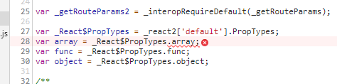
Redux Saga
当我dispatch一个action后，这个先发到reducer。然后才走到saga，saga拿到后put了一个新的action这个新的action才是我们要处理的。
简单来说，当我们dispatch一个action后，先发到reducer，然后saga同时也收到了一份，这时候saga可以put出新的action给reducer接收。
换句话来说，saga是监听redux总线上的数据，原来怎么dispatch还是按照原来的走，当saga监听到action后可以自己做一些处理然后put出新的action。
循环事件，后来的事件把前面的覆盖takeLast
并发请求。有时候有些操作需要发起多个请求，这样一个操作的时间就需要time1+time2+time3。但是，如果这些请求没有先后关系就可以一次性发出请求，这样做的好处就是这个操作的时间只会是最长的那个请求的时间。比如原来的时间是100ms+200ms+150ms，现在就只要200ms。1
yield call(api1,api2,api3)
顺序执行和并行执行。在saga中有些操作需要互相调用方法。yield put(action1)是异步的，yield* sagaFun1()同步的。可以根据实际情况结合使用。1
2
3
4
5
6
7
8// 并发执行
yield put(action1)
yield put(action2)
yield put(action3)
// 顺序执行
yield* sagaFun1()
yield* sagaFun2()
yield* sagaFun3()
React性能优化
合理使用Container和Dump
有些组件的数据都是从父组件一直传递到子组件，这样当父组件渲染的时候，子组件也会跟着渲染。所以比如list，dialog等类型的组件应该是在redux里面，然后container进行connect。只有这些变化的时候才会重新render，否则父组件重新render也不会让子组件重新render因为，子组件的props都没有变化。
定制shouldComponentUpdate函数
shouldComponentUpdate(nextProps,nextState) false不render，true才render。如果啥也不反悔默认返回true。在最新的react中，react给我们提供了React.PureComponent，官方也在早期提供了名为react-addons-pure-render-mixin插件来重新实现shouldComponentUpdate生命周期方法。
immutable与with-immutable-props-to-js
建议使用seamless-immutable。javascript中的对象一般都是可变的，因为使用了引用赋值，新的对象简单的引用了原始对象，改变新对象将影响到原始对象。这样做非常的昂贵，对cpu和内存会造成浪费。可以用withImmutablePropsToJs再包一层，保证在组件拿到的props后是同一个对象，只要对比值就可以了。
针对React的diff算法加入key，防止最坏情况的发生
react为了追求高性能，采用了时间复杂度为O(N)来比较两个属性结构的区别。传统的比较两个树形结构，需要通过O(N^3)，这样性能很低。
两个节点不一样最坏时间复杂度。O(N)的最坏时间复杂度。也就是说避免这种情况：把<div><Text1 /><Text2 /></div>改成<div><Text2 /><Text1 /></div>，react在对比的时候发现Text1和Text2不是同一个组件然后就直接销毁了，再重新生成，但是事实上他们只是换了一下顺序而已。
两个节点一样但是顺序不一样，同样也会导致最坏时间复杂度。这种情况要避免其实很简单，就是加入唯一key，这样react就会根据key的变化，而不是根据顺序进行diff计算了。
设置key不能用index，举一个例子：
注意：以下例子是反例，需要说明几个正确的结论
列表最好要加key
不能用index作为key
最好使用id作为key1
2
3
4
5
6
7
8
9
10
11
12
13
14
15
16
17
18
19
20
21export default class Example2 extends Component{
constructor(props){
super(props)
this.state={
data:['a','b','c','d']
}
}
handleChange = () => {
this.setState({
data:['d','c','b','a']
})
}
render(){
return <div>
{
this.state.data.map((val,idx)=><Item key={idx} parentValue={val} />)
}
<button onClick={this.handleChange}>改变state</button>
</div>
}
}
ReactEmptyComponent空组件
ReactTextComponent文本组件
ReactDOMComponent浏览器组件
ReactCompositeComponent自定义组件
上面实例中在数组重新排序后，key对应的实例都没有销毁，而是重新更新。具体更新过程我们拿key=0的元素来说明， 数组重新排序后：
首先，state改变肯定会引起重新render。组件重新render后得到新的虚拟dom；
新老两个虚拟dom进行diff，新老版的都有key=0的组件，react认为同一个组件，则只可能更新组件；
然后比较其children，子组件有两个，一个是文本组件ReactTextComponent，另一个是浏览器的input组件ReactDOMComponent
文本组件是受控组件，值变化了，重新render，重新赋值。
input组件是非受控组件，由于父组件重新render了所以自己也重新render，但是并没有重新赋值。
这里需要说几个事情
input是非受控组件，可以重新render但是它的值并没有改变
key=0的组件并没有销毁，而是进行了diff比较
重新render和重新赋值是两个概念。
受控和非受控最好不好互相转换。
把受控组件转成非受控组件，会导致受控在某处就断开了。
把非受控组件转成非空组件，并且在willReceive判断进行setState以此来达到受控的目的，会导致有时候外部一个改变直接导致了非受控组件的变化，把自己的值都清空了。
比如有几个组件<div><Text1 /><Text2 /></div>改成<div><Text2 /><Text1 /></div>，如果没有加key，会导致<div><Text1 key=1 /><Text2 key=2 /></div>当变成了<div><Text2 key=2 /><Text1 key=1 /></div>react会知道不用销毁，只要调整一下顺序即可，也就是只要重新render执行更新的生命周期就行了，这样就减少了不必要的性能浪费。
尽量减少新建变量和bind函数，传递参数是尽量减少传递参数的数量。
onClick={this.handleClick}构造函数每一次渲染的时候只会执行一遍；这种方法最好。这种写法初学者经常会遇到的一个问题就是undefined，这是因为没有使用箭头函数。普通函数中，this指向其函数的直接调用者；箭头函数中，this指向其定义环境，任何方法都改变不了其指向，如call（）、bind（）等；构造函数中，如果不使用new,则this指向window，如果使用new创建了一个实例，则this指向该实例。onClick={this.handleClick.bind(this)}在每次render()的时候都会重新执行一遍函数。onClick={()=>{this.handleClick()}}每一次render()的时候，都会生成一个新的匿名函数，即使两个箭头函数的内容是一样的。1
2
3
4
5
6
7
8
9
10
11// A
<ul>
<TodoItem text="First" complete={false} />
<TodoItem text="Second" complete={false} />
</ul>
// B
<ul>
<TodoItem text="Zero" complete={false} />
<TodoItem text="First" complete={false} />
<TodoItem text="Second" complete={false} />
</ul>
Webpack
性能优化
合并和拆分。合并业务代码，拆分公共代码。splitChunks
图片优化。雪碧图。url-loader和file-loader配合使用。limit8k的图通过file-loader直接打入css里面。超过8K的再用url-loader加载。可以和雪碧图综合考虑。
压缩js和css。UglifyJsPlugin、OptimizeCSSAssetsPlugin
样式表用link引入，并置顶。
Loader
样式表的Loader style-loader css-loader sass-loader
css-Loader把css通过引入，而style-loader把css放到
css-loader要配合MiniCssExtractPlugin.loader会把css进行抽取独立文件。
css-loader要启用modules=true，在代码里面才能import styles from ‘style.css’。才可以设置localIdentName规则，让css的名称唯一防止全名冲突。
可以开启OptimizeCSSAssetsPlugin对css进行压缩。1
2
3
4
5
6
7
8
9
10
11
12
13
14
15
16{
test: /\.(sc|c)ss$/,
use: [
MiniCssExtractPlugin.loader,
{
loader: 'css-loader',
options: {
modules: true,
localIdentName: '[path][name]__[local]--[hash:base64:5]'
}
},
{
loader: 'sass-loader'
}
]
}
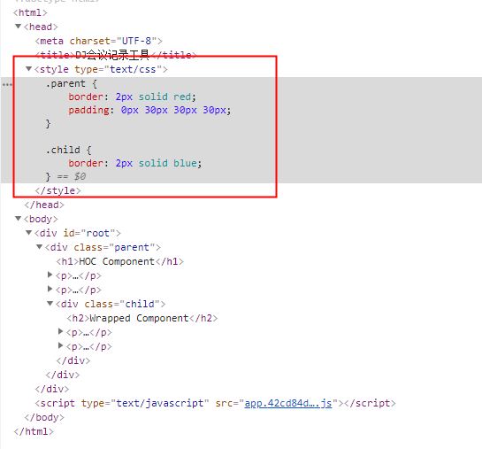
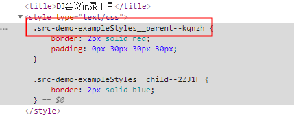
file-loader与url-loader
相同点：都可以用来加载资源文件。
不同点：url-loader可以设置小于指定大小的文件直接打包到js里面，减少请求次数。file-loader则是把文件加载到指定目录。
当有文件超过url-loader指定的文件大小后，不会被打包到js里面，但是它就变成需要file-loader加载否则会报错。
把小图片打包到js里面减少请求次数各有利弊。优点：可以减少小图片的请求次数，降低网络IO的请求次数。缺点：图片会被转换成base64的格式和js一起打包进入会带出新的问题，就是这样会导致css变大，这样加载单个css可能需要的时长会更长。另外，base64的算法是把原来的数据每3位用4位替换，这样原来如果是1，就会变成4/3，相当于比原来大了1/3。
因此是否需要使用url-loader把小图片打包到js文件需要权衡后再做决定。把小图片打包到js需要做的牺牲就是js文件会变大。
file-loader实现的是懒加载，只有在页面需要用到具体的元素才会加载，否则并不会加载。这样能提高整体的性能。
file-loader的publicPath属性，用来指定访问的路径。
file-loader的outputPath属性，用来指定打包输出的路径和访问的路径。建议使用outputPath属性，因为这个属性同时指定了打包输入和访问的路径，而publicPath只指定了访问的路径，如果你实际打包的路径不是这个就访问不到了。
url-loader的limit属性，用来指定小于限定的字节(Byte)则打包到js文件里面，超过限定的字节(Byte)则需要file-loader加载。
基本用法如下，小于8k的图片可以转成base64一起打入css，大于的则用file-loader加载。这样既可以减少图片请求数，又保证了css文件不会太大。1
2
3
4
5
6
7
8
9
10
11{
test:/\.(jpg|png|svg|gif)/,
use:[{
loader:'url-loader',
options:{
limit:8129,//小于limit限制8k 的图片将转为base64嵌入引用位置
fallback:'file-loader',//大于limit限制的将转交给指定的loader处理
outputPath:'imgs/'//options会直接传给fallback指定的loader
}
}]
}
其他配置
IP访问
在package.json的执行脚本中增加--host 0.0.0.0就可以通过ip访问了，缺点是刚开始启动的时候无法打开网页，需要等启动完成后输入地址重新访问。
也可以通过js获取本机ip1
2
3
4
5
6
7
8
9
10
11
12
13
14
15
16devServer: {
disableHostCheck: true,
// host: '0.0.0.0'
host:(function getIPAdress(){
var interfaces = require('os').networkInterfaces()
for(var devName in interfaces){
var iface = interfaces[devName]
for(var i=0;i<iface.length;i++){
var alias = iface[i]
if(alias.family === 'IPv4' && alias.address !== '127.0.0.1' && !alias.internal){
return alias.address
}
}
}
})()
}
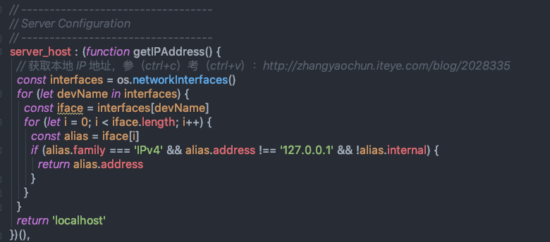
Node
dirname和process.cwd()
`dirname是当前js文件所处的路径。process.cwd()`是当前进程的工作目录，参照package.json所在的位置的。1
2console.info('process.cwd()是当前进程的工作目录，参照package.json所在的位置的。',process.cwd())
console.info('__dirname是当前js文件所处的路径。',__dirname)
path
要使用path需要先npm install path，然后再在需要的文件里面引入const path = require('path');才可以使用。
两种用法
连接路径：path.join([path1][, path2][, …])
路径解析：path.resolve([from …], to)
最大的区别：就是对/的解析，join只是拼上去，而resolve则是解析成根路径/
1 | var path = require('path'); |
Babel
Babel的配置文件是.babelrc，存放在项目的根目录下。使用 Babel 的第一步，就是配置这个文件。该文件用来设置转码规则和插件，基本格式如下。1
2
3
4{
"presets": [],
"plugins": []
}
presets
presets字段设定转码规则，官方提供以下的规则集，你可以根据需要安装。
最新转码规则
$ npm install –save-dev babel-preset-latest
react 转码规则
$ npm install –save-dev babel-preset-react
不同阶段语法提案的转码规则（共有4个阶段），选装一个
Stage 0 - Strawman（展示阶段）
Stage 1 - Proposal（征求意见阶段）
Stage 2 - Draft（草案阶段）
Stage 3 - Candidate（候选人阶段）
Stage 4 - Finished（定案阶段）
$ npm install –save-dev babel-preset-stage-0
$ npm install –save-dev babel-preset-stage-1
$ npm install –save-dev babel-preset-stage-2
$ npm install –save-dev babel-preset-stage-31
2
3
4
5
6
7
8{
"presets": [
"env",
"es2015",
"react",
"stage-2"
]
}
如果presets没有设置stage-2，因为这里面有些语法还在stage-2阶段还没有正式发布，所以如果没有加上这个配置就无法解析这种语法。
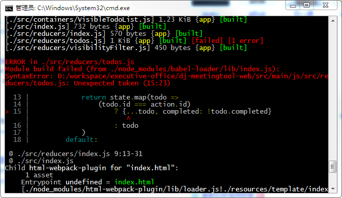
任何人都可以向标准委员会（又称 TC39 委员会）提案，要求修改语言标准。一种新的语法从提案到变成正式标准，需要经历五个阶段。每个阶段的变动都需要由 TC39 委员会批准。
一个提案只要能进入 Stage 2，就差不多肯定会包括在以后的正式标准里面。ECMAScript 当前的所有提案，可以在 TC39 的官方网站Github.com/tc39/ecma262查看。
在SwitchCase的case中如果没有{}
当词法声明 (let、const、function 和 class) 出现在 case或default 子句中。该词法声明的变量在整个 switch 语句块中是可见的，但是它只有在运行到它定义的 case 语句时，才会进行初始化操作。为了保证词法声明语句只在当前 case 语句中有效，需要用大括号{}将你子句包裹在块中。
presets打包优化
presets中已经包含了一组用来转换ES6+的语法的插件，如果只使用少数新特性而非大多数新特性，可以不使用preset而只使用对应的转换插件。
babel默认只转换语法（比如箭头函数、解构赋值、class等语法），而不转换新的API（比如Map，Set，Promise），如需使用新的API，还需要使用对应的转换插件或者polyfill。
使用babel-polyfill(不使用useBuiltIns)
优点：一次性解决所有兼容性问题,而且是全局的,浏览器的console也可以使用
缺点：一次性引入了ES6+的所有polyfill，打包后的js文件体积会偏大，对于现代的浏览器，有些不需要polyfill，造成流量浪费，污染了全局对象，不适合框架或库的开发。
使用babel-preset-env插件和useBuiltIns属性。我的理解是从字面上来看出发点是适配环境的问题，比如支持react的jsx语法，比如支持stage-2的语法（比如…语法），比如支持浏览器版本等跟环境相关的。
优点：按需(按照指定的浏览器环境所需)引入polyfill, 一定程度上减少了不必要polyfill的引入。
缺点：解决问题的角度不一样，主要是处理环境方面的适配，比如并没办法支持generate语法。
使用babel-plugins。主要用于针对某个特性需要的转义，比如支持写在class的属性transform-class-properties插件。支持import和export的add-module-exports插件。等等
优点：配置完一个转换插件后, 代码中每个使用这个API的地方的代码都会被转换成使用polyfill中实现的代码。作用域是模块,避免全局冲突。是按需引入,避免不必要引入造成及代码臃肿。
缺点：每个模块内单独引用和定义polyfill函数,造成了重复定义,使代码产生冗余。
使用插件 babel-runtime 与 babel-plugin-tranform-runtime。抽离了公共模块，避免了重复引入，从core.js的库中引入所需polyfill
简单来说，就是提供了比较多的通用的公共模块。其实也是一个插件。但是对[].includes(x), 依赖于Array.prototype.include仍无法使用。
优点：
无全局污染
依赖统一按需引入(polyfill是各个模块共享的), 无重复引入, 无多余引入
适合用来编写lib(第三方库)类型的代码
缺点：
被polyfill的对象是临时构造并被import/require的,并不是真正挂载到全局
由于不是全局生效, 对于实例化对象的方法,如[].include(x), 依赖于Array.prototype.include仍无法使用。因为这些在转换时并没办法被显示的检查出来。1
2
3
4
5
6
7
8
9
10
11
12
13
14
15
16
17
18
19
20
21{
"presets": [
["env",{
"modules": false,// 模块化交给webpack处理
"useBuiltIns":"usage",// "usage" | "entry" | false, defaults to false.
"targets": {"browsers": ["safari >= 7", "ie>=8"]}// 浏览器或者node环境
}],
"react",
"stage-2"
],
"plugins": [
"add-module-exports",// 转义import和export
"transform-runtime",// 转义generator
"transform-decorators-legacy",// 转义@
"transform-es3-member-expression-literals",// 支持ie
"transform-es3-property-literals",// 支持ie
["transform-es2015-classes", { "loose": true }],
"transform-proto-to-assign"
]
}
// 是否可以只用useBuiltIns+babel-polyfill不用transform-runtime？不行。一个典型的场景就是前者没有转义generator，后者有对静态的generator做转义。
1 | env useBuiltIns |
plugins
1 | { |
配置add-module-exports
作用：支持import和export语法
安装：”babel-plugin-add-module-exports”: “^1.0.0”
配置transform-runtime
作用：支持generator。当项目启用generate的时候如果没有这个插件会报错regeneratorRuntime is not defined。
安装：”babel-plugin-transform-runtime”: “^6.23.0”
配置transform-decorators-legacy
作用：支持@语法
安装：”babel-plugin-transform-decorators-legacy”: “^1.3.5”
配置transform-class-properties
作用：有时候我们将 defaultProps, propTypes写在class中，而不是写在class外面就可以使用这个插件支持。
安装：”babel-plugin-transform-class-properties”: “^6.24.1”
配置 transform-es3-member-expression-literals和transform-es3-property-literals
作用：兼容IE8
- 安装：”babel-plugin-transform-es3-member-expression-literals”: “^6.22.0”和
“babel-plugin-transform-es3-property-literals”: “^6.22.0”
像下面这种代码1
2function _interopRequireDefault(obj) { return obj && obj.__esModule ? obj : { default: obj }; }
module.exports = _main2.default;
在 IE8 下会直接报”缺少标识符、字符串或数字”的错。我们得在对象的属性上加 ‘’ 才可以。就像下面这样：1
2
3function _interopRequireDefault(obj) {
return obj && obj.__esModule ? obj : { 'default': obj };
}
至于原因，并不是 IE8 下对象的属性必须得加 ‘’ 才行，而是 default 的问题，作为一个关键字，同样的问题还包括 catch。这两种情况，可以通过使用transform-es3-property-literals和transform-es3-member-expression-literals这两个插件搞定。总之，在平时写代码的时候避免使用关键字，或者保留字作为对象的属性值，尤其是在习惯不加引号的情况下。相关讨论：Allow reserved words for properties
babel在webpack中出现的问题
Using removed Babel 5 option
使用了被移除的babel5中的语法，是因为没有把node_modules排除掉。目录是相对package.json的路径。
因为node_modules里面有一些包是用了Babel 5中的语法，但是在这个loader里面又是被移除了，所以就报错了，根本解决办法就是把node_modulesexclude掉。1
2
3
4
5
6
7
8
9module: {
rules: [
{
exclude:/node_modules/,
test: /\.(js|jsx)$/,
loader: ['babel-loader','eslint-loader']
}
]
}
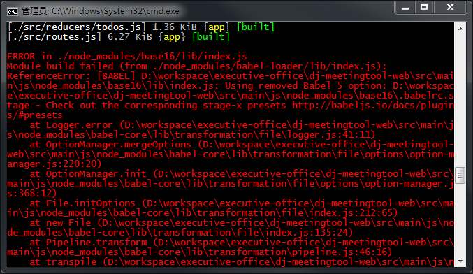
Eslint
package.json中需要引用的npm包1
2
3
4
5
6{
"babel-eslint": "^10.0.1",
"eslint": "^5.13.0",
"eslint-plugin-react": "^7.12.4",
"eslint-loader": "^2.1.1",
}
eslintrc.json配置文件
要在配置文件中设置 parser 为 babel-eslint ，意思是用babel转换之后再给eslint验证，否则有些es6的语法可能eslint并无法识别。
babel-eslint eslint eslint-plugin-react主要用于eslintrc.json的配置。1
2
3
4
5
6
7
8
9
10
11
12
13
14
15
16
17
18
19
20
21
22
23
24
25
26
27
28
29
30
31
32
33
34
35
36{
"parser": "babel-eslint",
"plugins": ["react"],
"env": {
"browser": true,
"commonjs": true,
"es6": true
},
"extends": ["plugin:react/recommended"],
"settings": {
"react": {
"createClass": "createReactClass",
"pragma": "React",
"version": "detect",
"flowVersion": "0.53"
},
"propWrapperFunctions": [
"forbidExtraProps",
{ "property": "freeze", "object": "Object" },
{ "property": "myFavoriteWrapper" }
]
},
"parserOptions": {
"ecmaFeatures": {
"jsx": true
},
"ecmaVersion": 2018,
"sourceType": "module"
},
"rules": {
"indent": ["error", "tab"],
"linebreak-style": ["error", "windows"],//注意，这里最好去掉，因为windows和UNIX系统的换行符是不一样的。
"quotes": ["error", "single"],
"semi": ["error", "never"]
}
}
配置到webpack中
eslint-loader用于webpack的配置。1
2
3
4
5
6
7
8
9module: {
rules: [
{
exclude: /node_modules/,
test: /\.(js|jsx)$/,
loader: ['babel-loader','eslint-loader']
}
]
}
增加钩子让用户在提交前都执行以下eslint。
Git hooks made easy
在package.json增加husky（哈士奇）依赖，同时配置commit之前和push之前需要执行的命令，强制用户执行eslint检查。1
2
3
4
5
6
7
8
9
10
11{
"husky": {
"hooks": {
"pre-commit": "npm test",
"pre-push": "npm test",
}
},
"devDependencies":{
"husky": "^1.3.1",
}
}
推荐配置
可以访问https://cn.eslint.org/demo/勾选需要的配置，然后下载到本地使用。
0 = off, 1 = warn, 2 = error1
2
3
4
5
6
7
8
9
10
11
12
13
14
15
16
17
18
19
20
21
22
23
24
25
26
27
28
29
30
31
32
33
34
35
36
37
38
39
40
41
42
43
44
45
46
47
48
49
50
51
52
53
54
55
56
57{
"parserOptions": {
"ecmaVersion": 6,
"sourceType": "script",
"ecmaFeatures": {}
},
"rules": {
"constructor-super": 2,
"no-case-declarations": 2,
"no-class-assign": 2,
"no-compare-neg-zero": 2,
"no-cond-assign": 2,
"no-console": 2,
"no-const-assign": 2,
"no-constant-condition": 2,
"no-control-regex": 2,
"no-debugger": 2,
"no-delete-var": 2,
"no-dupe-args": 2,
"no-dupe-class-members": 2,
"no-dupe-keys": 2,
"no-duplicate-case": 2,
"no-empty-character-class": 2,
"no-empty-pattern": 2,
"no-empty": 2,
"no-ex-assign": 2,
"no-extra-boolean-cast": 2,
"no-extra-semi": 2,
"no-fallthrough": 2,
"no-func-assign": 2,
"no-global-assign": 2,
"no-inner-declarations": 2,
"no-invalid-regexp": 2,
"no-irregular-whitespace": 2,
"no-mixed-spaces-and-tabs": 2,
"no-new-symbol": 2,
"no-obj-calls": 2,
"no-octal": 2,
"no-redeclare": 2,
"no-regex-spaces": 2,
"no-self-assign": 2,
"no-sparse-arrays": 2,
"no-this-before-super": 2,
"no-undef": 2,
"no-unexpected-multiline": 2,
"no-unreachable": 2,
"no-unsafe-finally": 2,
"no-unsafe-negation": 2,
"no-unused-labels": 2,
"no-unused-vars": 2,
"no-useless-escape": 2,
"require-yield": 2,
"use-isnan": 2,
"valid-typeof": 2
},
"env": {}
}
Immutable
基本规范state.set(‘key’,value)
如果value是基础类型，比如number，string等，是可以直接这样set进去。
如果value是对象类型，比如map，list等，可以fromJS(value)再设置进去。
因为state.set('key',fromJS(1))和state.set('key',1)，在state.get('key')是一样的。但是，state.set('key',fromJS({a:1}))和state.set('key',{a:1})，在state.get('key')是不一样的。前者get出来的是一个immutable对象，后者get出来的是一个js对象。
所以综上所述，在set的时候，如果是基础类型可以直接set，如果是对象类型要先fromJS()再set进去。
以此类推state.merge({'key2',value2})这个value也是一样的道理。
注意事项
不要在container里面toJS()，因为toJS()之后会是一个新的对象，导致react重新render。
可以配合with-immutable-props-to-js使用const TodoListSmart = connect(mapStateToProps,mapDispatchToProps)(WithImmutablePropsToJs(TodoListDump))。这样可以保证TodoListDump获取到的props如果是同一个值不会产生新的对象。
HTTPS
基本流程
- 客户端，发起HTTPS请求，请求服务端返回一个，非对称加密的公钥。
- 服务端，收到HTTPS请求，用私钥生成一个公钥，把公钥返回给客户端。
- 客户端，收到公钥，用公钥加密数据，把加密后的数据发给服务端。
- 服务端，收到加密的数据，用私钥解密，获得原文内容。
劫持
在上述基本流程中，如果客户端和服务端交互的过程中被拦截。就有可能出现问题。
- 客户端，发起HTTPS请求，请求服务端返回一个，非对称加密的公钥。
- 服务端，收到HTTPS请求，用私钥生成一个公钥，把公钥返回给客户端。
- 第三方收到公钥，在自己这边用自己的私钥生成一个公钥，然后传递给客户端。
- 客户端，收到公钥，用公钥加密数据，把加密后的数据发给服务端。
- 第三方进行拦截，用自己的私钥解密客户端发送的数据，获得原文后用真正服务端的公钥进行加密，然后返回给服务端。
- 服务端，收到加密的数据，用私钥解密，获得原文内容。
数字证书
证书中包含了加密过的A公钥和权威机构的信息，所以服务器只需要给客户端下发数字证书即可。权威机构的公钥不需要传输，因为权威机构会和主流的浏览器或操作系统合作，将他们的公钥内置在浏览器或操作系统环境中。
服务器给客户端下发数字证书时证书被中间人劫持了，中间人将服务器的证书替换成自己的证书下发给客户端，客户端收到之后能够通过权威机构的公钥解密证书内容（因为中间人的证书也是权威机构私钥加密的），从而获取公钥，但是，这里的公钥并不是服务器原本的A公钥，而是中间人自己证书中的B公钥。
安全传输证书
保证客户端收到的证书是服务器下发的证书，没有被中间人篡改过。
检查证书中的域名和当前访问的域名是否一致
JS基础
原型与原型链，作用域及闭包，异步和单线程
原型与原型链
创建对象有几种方法。1
2
3
4
5
6
7
8
9// 第一种
var o1 = {name:'o1'}
var o11 = new Object({name:'o1'})
// 第二种
var M = function (){this.name='o2'}
var o2 = new M()
// 第三种
var P={name:'o3'}
var o3 = Object.create(P)
构造函数M、原型对象M.prototype、实例new M()、原型链__proto__
instanceof的原理。判断实例对象的__proto__是不是原型对象
new运算符
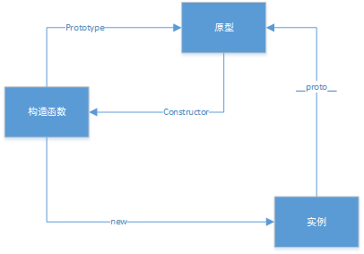
继承和重写1
2
3
4
5
6
7
8
9
10
11
12
13
14
15
16
17
18
19
20
21
22
23
24
25
26
27
28
29
30
31
32
33
34
35
36
37
38
39
40
41
42
43
44
45
46// 让我们从一个自身拥有属性a和b的函数里创建一个对象o：
let f = function () {
this.a = 1;
this.b = 2;
}
/* 这么写也一样
function f() {
this.a = 1;
this.b = 2;
}
*/
let o = new f(); // {a: 1, b: 2}
// 在f函数的原型上定义属性
f.prototype.b = 3;
f.prototype.c = 4;
// 不要在 f 函数的原型上直接定义 f.prototype = {b:3,c:4};这样会直接打破原型链
// o.[[Prototype]] 有属性 b 和 c
// (其实就是 o.__proto__ 或者 o.constructor.prototype)
// o.[[Prototype]].[[Prototype]] 是 Object.prototype.
// 最后o.[[Prototype]].[[Prototype]].[[Prototype]]是null
// 这就是原型链的末尾，即 null，
// 根据定义，null 就是没有 [[Prototype]]。
// 综上，整个原型链如下:
// {a:1, b:2} ---> {b:3, c:4} ---> Object.prototype---> null
console.log(o.a); // 1
// a是o的自身属性吗？是的，该属性的值为 1
console.log(o.b); // 2
// b是o的自身属性吗？是的，该属性的值为 2
// 原型上也有一个'b'属性，但是它不会被访问到。
// 这种情况被称为"属性遮蔽 (property shadowing)"
console.log(o.c); // 4
// c是o的自身属性吗？不是，那看看它的原型上有没有
// c是o.[[Prototype]]的属性吗？是的，该属性的值为 4
console.log(o.d); // undefined
// d 是 o 的自身属性吗？不是，那看看它的原型上有没有
// d 是 o.[[Prototype]] 的属性吗？不是，那看看它的原型上有没有
// o.[[Prototype]].[[Prototype]] 为 null，停止搜索
// 找不到 d 属性，返回 undefined
this指向1
2
3
4
5
6
7
8
9
10
11
12
13
14
15var o = {
a: 2,
m: function(){
return this.a + 1;
}
};
console.log(o.m()); // 3
// 当调用 o.m 时，'this' 指向了 o.
var p = Object.create(o);
// p是一个继承自 o 的对象
p.a = 4; // 创建 p 的自身属性 'a'
console.log(p.m()); // 5
// 调用 p.m 时，'this' 指向了 p
// 又因为 p 继承了 o 的 m 函数
// 所以，此时的 'this.a' 即 p.a，就是 p 的自身属性 'a'
原型链性能
在原型链上查找属性比较耗时，对性能有副作用，这在性能要求苛刻的情况下很重要。另外，试图访问不存在的属性时会遍历整个原型链。
错误实践：扩展原生对象的原型
经常使用的一个错误实践是扩展 Object.prototype 或其他内置原型。
这种技术被称为猴子补丁并且会破坏封装。尽管一些流行的框架（如 Prototype.js）在使用该技术，但仍然没有足够好的理由使用附加的非标准方法来混入内置原型。
扩展内置原型的唯一理由是支持 JavaScript 引擎的新特性，如 Array.forEach。
作用域及闭包
闭包是函数和声明该函数的词法环境的组合。换句话说说就是，函数和声明该函数的词法环境。
词法作用域。词法作用域中有效范围，是变量在代码中声明的位置所决定的。嵌套的函数可以访问在其外部声明的变量。
闭包。JavaScript中的函数会形成闭包。 闭包是由函数以及创建该函数的词法环境组合而成。这个环境包含了这个闭包创建时所能访问的所有局部变量。
它们共享相同的函数定义，但是保存了不同的词法环境。1
2
3
4
5
6
7
8
9function makeAdder(x) {
return function(y) {
return x + y;
};
}
var add5 = makeAdder(5);
var add10 = makeAdder(10);
console.log(add5(2)); // 7
console.log(add10(2)); // 12
词法环境。let块作用域，var完整作用域
异步和单线程
Event Loop事件运行机制
简单来说，主要从执行栈、宏任务队列、微任务队列三个维度去描述。
setTimeout等是宏任务，promise等是微任务。
执行栈，顺序执行js每一行代码，遇到异步代码则插入到任务队列。特别注意new Promise是同步代码，只不过它的callback是异步的应该是把它的callback放入微队列。
优先级，同步的普通代码>微队列>宏队列。执行顺序按照优先级从高到低执行，每一级执行完了才能执行下一级。
微任务或者宏任务执行过程如果还有产生新的任务，则继续插入到任务队列后面。微队列有上限1000行。
前置知识
push(v)修改原数组，返回数组长度。
pop()修改原数组，返回最后一个对象。
shift()修改原数组，返回第一个对象。
unshift(v)修改原数组，返回数组长度。
堆（Heap）。unshift在数组头部插入。堆是一种数据结构，是利用完全二叉树维护的一组数据，堆分为两种，一种为最大堆，一种为最小堆，将根节点最大的堆叫做最大堆或大根堆，根节点最小的堆叫做最小堆或小根堆。堆是线性数据结构，相当于一维数组，有唯一后继。
栈（Stack）。push()在数组末尾插入，pop()在数组末尾删除并返回。栈在计算机科学中是限定仅在表尾进行插入或删除操作的线性表。 栈是一种数据结构，它按照后进先出的原则存储数据，先进入的数据被压入栈底，最后的数据在栈顶，需要读数据的时候从栈顶开始弹出数据。栈是只能在某一端插入和删除的特殊线性表。
队列（Queue）。push()在数组末尾插入，shift()在数组头部删除并返回。特殊之处在于它只允许在表的前端（front）进行删除操作，而在表的后端（rear）进行插入操作，和栈一样，队列是一种操作受限制的线性表。进行插入操作的端称为队尾，进行删除操作的端称为队头。队列中没有元素时，称为空队列。队列的数据元素又称为队列元素。在队列中插入一个队列元素称为入队，从队列中删除一个队列元素称为出队。因为队列只允许在一端插入，在另一端删除，所以只有最早进入队列的元素才能最先从队列中删除，故队列又称为先进先出（FIFO—first in first out）
任务队列
在JavaScript中，任务被分为两种，一种宏任务（MacroTask）也叫Task，一种叫微任务（MicroTask）。
MacroTask（宏任务）。script全部代码、setTimeout、setInterval、I/O、UI Rendering。
MicroTask（微任务）。Promise、process.nextTick (Node独有)、Object.observe、MutationObserver
执行过程
执行栈每次扫描js代码，只剥离一层，然后优先执行同步的代码，异步的代码分别放入宏队列和微队列。
在执行微队列microtask queue中任务的时候，如果又产生了microtask，那么会继续添加到队列的末尾，也会在这个周期执行，直到microtask queue为空停止。
当然如果你在microtask中不断的产生microtask，那么其他宏任务macrotask就无法执行了，但是这个操作也不是无限的，拿NodeJS中的微任务process.nextTick()来说，它的上限是1000个。1
2
3
4
5
6
7
8
9
10
11
12
13
14
15
16
17console.log(1);
setTimeout(() => {
console.log(2);
Promise.resolve().then(() => {
console.log(3)
});
});
new Promise((resolve, reject) => {
console.log(4)
resolve(5)
}).then((data) => {
console.log(data);
})
setTimeout(() => {
console.log(6);
})
console.log(7);
开始执行
step1
mainStack=[console.log(1)]
macroQueue=[]
microQueue=[]
打印结果
1
step2
mainStack=[setTimeout]
macroQueue=[callback1]
microQueue=[]
打印结果
1
step3
mainStack=[promise]
macroQueue=[callback1]
microQueue=[callback2]
打印结果
1
4
step4
mainStack=[setTimeout]
macroQueue=[callback1,callback3]
microQueue=[callback2]
打印结果
1
4
step5
mainStack=[console]
macroQueue=[callback1,callback3]
microQueue=[callback2]
打印结果
1
4
7
全局Script代码执行完了，进入下一个步骤，从microtask queue中依次取出任务执行，直到microtask queue队列为空。
step6
mainStack=[callback2]
macroQueue=[callback1,callback3]
microQueue=[]
打印结果
1
4
7
5
step7（这一步执行callback1的时候又遇到了另一个Promise，Promise异步执行完后在microtask queue中又注册了一个callback4回调函数）
mainStack=[callback1]
macroQueue=[callback3]
microQueue=[]
打印结果
1
4
7
5
2
step8
mainStack=[promise]
macroQueue=[callback3]
microQueue=[callback4]
打印结果
1
4
7
5
2
step9
mainStack=[callback4]
macroQueue=[callback3]
microQueue=[]
打印结果
1
4
7
5
2
3
step10
mainStack=[callback3]
macroQueue=[]
microQueue=[]
打印结果
1
4
7
5
2
3
6
1 | console.log(1); |
执行结果
1
4
10
5
6
7
2
3
9
8
其他
正则表达式
常用用法，exec，test，match。
test比较简单，返回表达式是否匹配上了字符串。匹配上了返回true，没匹配上返回false。
exec和match作用类似，不同的地方在于前者是字符串作为表达式的参数，后者是表达式作为字符串的参数。
还有就是正则表达式结合replace，可以使用子表达式来达到更灵活的替换规则。
1 | let str = `console.log('123123')` |
算法
常用排序算法快速排序、选择排序、堆排序。
Fisher-Yates shuffle算法
该算法是用来打乱数组的顺序。
简单来说就是从左往右循环数组的每个项，每次把当前项和当前项之后的项（包括当前项）随机选择一个进行交换，但是如果随机到自己则不进行交换。1
2
3
4
5
6
7
8
9
10
11shuffle(array){
//最后一位只能选到自己，自己和自己不交换，所以最后一位就不考虑，所以把数组的长度减去1。
const endIndex = array.length - 1
for (let i = 0; i <= endIndex; i++){
//从当前位置之后（包括当前位置）随机取一个值进行交换。
const j = i + Math.floor(Math.random() * (array.length - i));
//es6解构赋值
[array[i], array[j]] = [array[j], array[i]]
}
return array
}
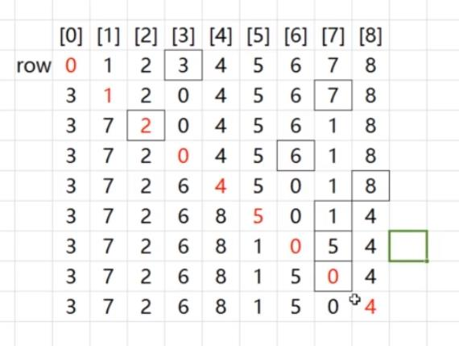
九宫格
行坐标colIndex列坐标rowIndex和宫序号boxIndex宫内序号cellIndex的互相转换
宫坐标（Gx,Gy）。宫坐标的规律是，Gx是横坐标每3格＋1,Gy是纵坐标每3格＋1，所以要(col,row)转换成(Gx,Gy)就是把col和row分别/3取整，表示间隔了几次3格，得到的值就是（Gx,Gy）。((col/3),（row/3）)
宫序号boxIndex。我们把每个九宫格看成是一格，可以得出Gx每＋1就代表多1个九宫格，Gy每＋1就代表多3个九宫格。所以要计算宫序号，只要Gx＋Gy×3得到的值就是序号。(col/3)＋（row/3）×3
宫内格坐标。每3×3=9格是一个九宫格，图中总共有9个九宫格，然后每个九宫格都有自己的坐标从(0,0)-(2,2)。简单来说就是每隔3格，单元格的坐标就要重新计算。也就是说行列坐标对3求余表示当前的坐标遇3归0后剩下的值就是单元格的坐标。((colIndex%3),(rowIndex%3))
宫内序号cellIndex。每个九宫格都是一个独立的数组，要把九宫格里面的坐标转换成序号也是类似的。横坐标＋1表示单元格序号＋1，纵坐标+1表示单元格的序号+3。(colIndex%3)＋(rowIndex%3)×3
宫序号和宫内序号转换成行列坐标
因为Gx=col/3,Gy=row/3；所以col=Gx×3，row=Gy×3；(Gx×3,Gy×3)只是这个宫的左上角的坐标。根据宫内序号cellIndex可以得到cellIndex%3是宫内横坐标，cellIndex/3是宫内纵坐标。把宫内序号cellIndex代入可得((Gx×3＋cellIndex%3),(Gy×3＋cellIndex/3))。接下来根据宫序号boxIndex可以得到boxIndex%3是横坐标Gx，boxIndex/3是纵坐标Gy。最终用宫序号和宫内序号表示坐标。((boxIndex%3×3＋cellIndex%3),(boxIndex/3×3＋cellIndex/3))
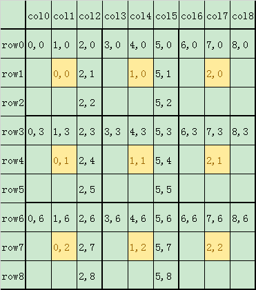
安全
基础
XSS基本概念。跨站脚本攻击。跨站脚本攻击Cross Site Scripting
XSS原理。不需要登录认证，在提交区注入脚本，在合法的页面注入js。通过合法的途径输入不合法的内容。
XSS防范措施。过滤特殊字段，转义特殊字符。转义输入内容，过滤敏感字符
CSRF基本概念。跨站请求伪造。跨站请求伪造Cross-site request forgery
CSRF原理。登录A网站保存了cookie，访问B网站引诱用户点击发起了请求A网站的接口。用户登录过后拿到用户的cookie然后伪造用户的请求。
CSRF防范措施。token验证（服务器下发的token，自动请求的接口不会带token，而且token一般没办法伪造）、referer验证（验证来源是不是A网站）、隐藏令牌（放在head头中）增加token验证。
XSS 漏洞的发生和修复
通常页面中包含的用户输入内容都在固定的容器或者属性内，以文本的形式展示。
攻击者利用这些页面的用户输入片段，拼接特殊格式的字符串，突破原有位置的限制，形成了代码片段。
攻击者通过在目标网站上注入脚本，使之在用户的浏览器上运行，从而引发潜在风险。
通过 HTML 转义，可以防止 XSS 攻击。1
2
3
4
5<input type="text" value="<%= getParameter("keyword") %>">
<button>搜索</button>
<div>
您搜索的关键词是：<%= getParameter("keyword") %>
</div>
当浏览器请求 http://xxx/search?keyword="><script>alert('XSS');</script>时，服务端会解析出请求参数 keyword，得到 "><script>alert('XSS');</script>，拼接到 HTML 中返回给浏览器。形成了如下的 HTML：1
2
3
4
5<input type="text" value=""><script>alert('XSS');</script>">
<button>搜索</button>
<div>
您搜索的关键词是："><script>alert('XSS');</script>
</div>
浏览器无法分辨出 <script>alert('XSS');</script> 是恶意代码，因而将其执行。这里不仅仅 div 的内容被注入了，而且 input 的 value 属性也被注入， alert 会弹出两次。
解决办法1
2
3
4
5<input type="text" value="<%= escapeHTML(getParameter("keyword")) %>">
<button>搜索</button>
<div>
您搜索的关键词是：<%= escapeHTML(getParameter("keyword")) %>
</div>
escapeHTML() 按照如下规则进行转义：|字符|转义后的字符| |-|-| |&|&| |<|<| |>|>| |”|"| |’|'| |/|/|经过了转义函数的处理后，最终浏览器接收到的响应为1
2
3
4
5<input type="text" value=""><script>alert('XSS');</script>">
<button>搜索</button>
<div>
您搜索的关键词是："><script>alert('XSS');</script>
</div>
恶意代码都被转义，不再被浏览器执行，而且搜索词能够完美的在页面显示出来。
注意特殊的 HTML 属性、JavaScript API
做了 HTML 转义，并不等于高枕无忧。
对于链接跳转，如 <a href=”xxx” 或 location.href=”xxx”，要检验其内容，禁止以 javascript: 开头的链接，和其他非法的 scheme。1
<a href="<%= escapeHTML(getParameter("redirect_to")) %>">跳转...</a>
这段代码，当攻击 URL 为 http://xxx/?redirect_to=javascript:alert('XSS')，服务端响应就成了：1
<a href="javascript:alert('XSS')">跳转...</a>
1 | // 根据项目情况进行过滤，禁止掉 "javascript:" 链接、非法 scheme 等 |
根据上下文采用不同的转义规则
HTML 转义是非常复杂的，在不同的情况下要采用不同的转义规则。如果采用了错误的转义规则，很有可能会埋下 XSS 隐患。
应当尽量避免自己写转义库，而应当采用成熟的、业界通用的转义库。
漏洞总结
在 HTML 中内嵌的文本中，恶意内容以 script 标签形成注入。
在内联的 JavaScript 中，拼接的数据突破了原本的限制（字符串，变量，方法名等）。
在标签属性中，恶意内容包含引号，从而突破属性值的限制，注入其他属性或者标签。
在标签的 href、src 等属性中，包含 javascript: 等可执行代码。
在 onload、onerror、onclick 等事件中，注入不受控制代码。
在 style 属性和标签中，包含类似 background-image:url(“javascript:…”); 的代码（新版本浏览器已经可以防范）。
在 style 属性和标签中，包含类似 expression(…) 的 CSS 表达式代码（新版本浏览器已经可以防范）。
总之，如果开发者没有将用户输入的文本进行合适的过滤，就贸然插入到 HTML 中，这很容易造成注入漏洞。攻击者可以利用漏洞，构造出恶意的代码指令，进而利用恶意代码危害数据安全。
React中对XSS如何进行XSS攻击和防范
prerender / SSR 的 hydrate 过程会生成 html ，需要小心测试其中是否有 XSS 漏洞。
dangerouslySetInnerHTML、onload=字符串、href=字符串 等，都有可能造成 XSS 漏洞。
所有的用户输入都需要经过HTML实体编码，这里React已经帮我们做了很多，它会在运行时动态创建DOM节点然后填入文本内容（你也可以强制设置HTML内容，不过这样比较危险）。
当你打算序列化某些状态并且传给客户端的时候，你同样需要进行HTML实体编码。
Yahoo的工程师已经提供了一个Serialize JavaScript模块帮我们轻松地进行JSON转码与过滤，我们可以直接使用npm install –save serialize-javascript导入该模块，然后使用serialize方法替代内置的JSON.stringify方法。
ES7
async/await 和 promise
async/await 在底层转换成了 promise 和 then 回调函数。也就是说，这是 promise 的语法糖。每次我们使用 await, 解释器都创建一个 promise 对象，然后把剩下的 async 函数中的操作放到 then 回调函数中。async/await 的实现，离不开 Promise。从字面意思来理解，async 是“异步”的简写，而 await 是 async wait 的简写可以认为是等待异步方法执行完成。
async/await不要乱用，否则会增加没必要的时间浪费。比如原来可以并行执行的两个方法，使用了await就导致时间边长了。1
2
3
4
5
6
7
8
9
10
11
12
13
14
15
16
17
18
19
20// 比如原来b和d是可以并发执行的
a(() => {
b();
});
c(() => {
d();
});
// 但是这样await之后
await a();
await b();
await c();
await d();
// 就变成了顺序执行，增加了时间
a(() => {
b(() => {
c(() => {
d();
});
});
});
单元测试
Karma 测试框架，提供多浏览器环境跑单元测试的能力，包括headless浏览器。
Mocha 测试框架，提供兼容浏览器和Node环境的单元测试能力，可使用karma-mocha集成进Karma中。
Chai 断言库，支持should,expect,assert不同类型的断言测试函数，可使用karma-chai集成进Karma中。
大部分单元测试都是基于上述三个库联合使用而展开的。Karma-webpack主要提供的能力，是为Karma中加载的测试脚本提供模块化加载的能力。
数据库同步，升级indexDB
参考svn的同步机制，是否已同步syncFlag，true已同步，false未同步。version比较。
syncFlag false
客户端版本 > 服务端版本，不存在。
客户端版本 = 服务端版本，push数据。
客户端版本 < 服务端版本，数据冲突。
syncFlag true
客户端版本 > 服务端版本，不存在。
客户端版本 = 服务端版本，不操作。
客户端版本 < 服务端版本，pull数据。
基础部分
页面布局
几种布局方式。float，position，flex，table，grid
css盒子模型
标准盒子模型box-sizing:content-box
IE盒子模型box-sizing:border-box
DOM事件
事件捕获从上往下
事件冒泡从下往上
类型转换
string , number , boolean , undefined , null , symbol
变量提升。js编译的时候把变量和函数提升到顶部。
HTTP协议类
HTTP1.0/HTTP1.1
HTTP协议的主要特点。简单：快速uri唯一；灵活：可以完成不同数据类型的传输；无连接：连接一次就断掉，不会保持链接；无状态：服务端不保存客户端请求的状态。
HTTP报文的组成部分。请求报文：请求行（http方法，页面地址，协议，版本1.1），请求头（key value值），空行（分隔请求头和请求体），请求体；响应报文：状态行，响应头，空行，响应体。
HTTP方法。GET获取资源，POST传输资源，PUT更新资源，DELETE删除资源，HEAD获得报文首部，OPTION预请求一次能成功才接着往下。
POST和GET的区别。GET回退无害，POST会再次请求。GET请求会被浏览器主动缓存POST不行。GET请求参数会被完整的保留在浏览器历史里面POST不会，预防CSRF可以把GET改成POST。GET长度有限制2kb不同浏览器不一样。GET比较不安全参数直接放在url里面，POST放在body里面。
HTTP状态码。1xx指示信息，2xx成功，3xxurl已被重定向、缓存，4xx客户端错误参数错误、授权过期、不允许访问、不支持方法，5xx服务端错误内部错误、无效响应。
什么是持久连接。1.1支持1.0不支持keep-alive模式，持续有效，避免重新建立连接。
什么是管线化。在持久连接的前提request1，request2，request3一并发送，然后服务端返回response1，response2，response3
HTTP2.0
特点是：在不改动HTTP语义、方法、状态码、URI及首部字段的情况下，大幅度提高了web性能。
二进制传输：在应用层（HTTP2.0）和传输层（TCP or UDP）之间增加一个二进制分帧层。首部信息会被封装到Headers帧，而Request Body则封装到Data帧
多路复用：在一个TCP连接中存在多个流，即可以同时发送多个请求。在客户端，这些帧乱序发送，到对端后再根据每个帧首部的流标识符重新组装。通过该技术，可以避免HTTP旧版本的队头阻塞问题，极大提高传输性能。我们原来针对这种场景做的优化是用雪碧图，这样图片只要加载一次，但是用多路复用则是根本上解决问题，直接一次发送多个请求，返回一次返回多个请求。
Header压缩：HTTP1的Header信息没有压缩每次都需要几百~几千字节。HTTP2用HPACK压缩算法，减小header的大小，记录header并维护索引表，下次再传输只要找到对应的索引就可以，不用重复传递太多的额外信息。
服务端push。
更安全。使用了tls的拓展ALPN做为协议升级，禁用不安全的算法。
面向对象
类与实例。类的声明。生成实例。
类与继承。如何实现继承，继承的几种方式。
call(this)或者apply(this)。缺点是只继承部分属性，如果父类有属性变化，子类并不会自动继承下来。
把原型对象指向父类的实例。
Child.prototype = new Parent()。parentName属性在子类找不到就去proto去找，而proto指向了prototype，所以就找到了父类的parentName。
缺点是c1=new child();c2=new child()。修改c1和c2的属性会指向同一个对象。这是因为prototype共用了一个对象。这种方法要特别注意prototype不要指向同一个对象。
组合继承。object.create()
通信类
什么是同源策略及限制。协议，域名，端口要一致。不能操作cookie，localstorage，indexDB。DOM无法获得。AJAX请求不能发送跨域。
前后端如何通信。ajax，WebSocket不限制同源策略，CORS支持跨域和同源
如何创建ajax。XMLHttpRequest，ActiveXObject，构造data到url或者body里面，对返回的状态码处理。
跨域通信的几种方式。
JSONP。我在客户端定义了cb1函数，发送jsonp请求返回相应的数据给cb1，执行cb1。
Hash。window.location.onHashChange()，会获得所有的整个url。
PostMessage。A发送postMesage(‘data’,url)，B接收window.addEventListener(‘message’,function)
WebSocket。new WebSocket(url)。emit提交、onopen、onmessage监听、onclose，客户端和服务端通过emit和onmessage实现通讯。
CORS。fetch后.then.catch
渲染机制
什么是DOCTYPE及作用。文档类型定义。html5<!DOCTYPE html> html4。告诉浏览器是什么文档类型，然后浏览器使用不懂的引擎渲染。
浏览器渲染过程。DOM tree + CSS tree => Render Tree => layout计算整个dom的宽高位置等全部的信息 => painting => display
重排reflow。本质上改变了盒子模型。一般导致reflow就会导致repaint。增加删除修改dom。通过css修改dom。修改字体。
重绘repaint。盒子模型没变但是里面的颜色变了。
布局layout。
页面性能
资源压缩合并，减少HTTP请求
非核心代码异步加载->异步加载的方式->异步加载的区别
动态脚本加载
defer。Html解析之后才执行，按顺序执行。
async。加载js后立即执行，不按顺序执行。
利用浏览器缓存->缓存的分类->缓存的原理
强缓存。在有效时间内直接从缓存拿出。
Header Expire：Thr，21 Jan 2017是绝对时间，服务器时间。 Cache-Control：max-age=3600相对时间，两个都有以这个为准。
协商缓存。把最后修改时间传递给服务器，确认后是否需要从缓存拿出。Etag If-None-Match If-Modified-Since
Last-Modified:wed,26 jan 2017
使用CDN
预解析DNS
错误监控
即时运行错误
try catch
window.onerror
资源加载错误。不会冒泡。
object.onerror
performance.getEntries()，获取所有已加载的资源。
Error事件捕获，window.addEventLinster(‘error’,()=>{console.log(1)},true)// ture捕获，false冒泡。
上报方式
ajax
(new Image()).src=’xxxx’。可以允许跨域。
allow-origin
状态码
n200 OK，当GET请求成功完成，DELETE或者PATCH请求同步完成。
n201 Created，对于那些要服务器创建对象的请求来说，资源已创建完毕。
n202 Accepted，POST，DELETE或者PATCH请求提交成功，稍后将异步的进行处理。
n204 No Content，Response中包含一些Header和一个状态行， 但不包括实体的主题内容（没有response body）
n304 Not Modified，客户的缓存资源是最新的， 要客户端使用缓存
n400 Bad Request
require_argument 缺少参数
invalid_argument 无效参数
n401 Unauthorized: 请求失败，因为用户没有进行认证
auth_token_expired 授权已过期
auth_invalid_token 无效的授权(如token不存在、需要mac签名、mac签名无效、nonce无效、重复提交等)
n403 Forbidden: 请求失败，因为用户被认定没有访问特定资源的权限
auth_denied 授权受限（无权限或IP地址受限等）
n405 Method Not Allowed：不支持该 Request 的方法
n406 Not Acceptable：请求的资源的内容特性无法满足请求头中的条件，因而无法生成响应实体。
n415 Unsupported Media Type: 对于当前请求的方法和所请求的资源，请求中提交的实体并不是服务器中所支持的格式，因此请求被拒绝。
n429 Too Many Requests: 请求频率超配，稍后再试。
n500 Internal Server Error: 服务器遇到一个错误，使其无法为请求提供服务
n501 Not Implemented：客户端发起的请求超出服务器的能力范围(比如，使用了服务器不支持的请求方法)时，使用此状态码。
n502 Bad Gateway：代理使用的服务器遇到了上游的无效响应
n503 Service Unavailable：服务器目前无法为请求提供服务，但过一段时间就可以恢复服务
mvvm框架
MVC：model，view，controller。controller控制model如何在view显示。model和view对controller的数据流向都是单向的，从controller到model和view。
MVVM，model，view，ViewModel。ViewModel双向View，model通过ajax等方式修改viewModel。弱化了controller的存在。
双向绑定
正向。通过模板把数据放到模板中freemarker。
反向。view的改变反应到data中。
绑定。自动处理。Object.defineProperty。
生命周期
为什么说componentWillMount、componentWillReceive、componentWillUpdate不安全
引入的getDerivedStateFromProps、getSnapshotBeforeUpdate有什么作用
static getDerivedStateFromProps(nextProps, prevState)
静态方法，新props和当前state，返回的对象用来更新state，返回 null 则不更新任何内容。
在React v16.3时setState和forceUpdate不会触发该方法，据说是失误后来修复了。也就是说最新版本的：props改变，setState，forceUpdate都会触发该方法getDerivedStateFromProps。
getDerivedStateFromProps 的存在只有一个目的：让组件在 props 变化时更新 state。可以完美的解决willreceive的问题。
getSnapshotBeforeUpdate() 被调用于render之后componentDidUpdate之前，return的值会传入到componentDidUpdate里面1
2
3
4
5
6
7
8
9
10
11
12
13
14
15
16class ExampleComponent extends React.Component {
state = {
isScrollingDown: false,
lastRow: null
}
static getDerivedStateFromProps(nextProps, prevState) {
if (nextProps.currentRow !== prevState.lastRow) {
return {
isScrollingDown:
nextProps.currentRow > prevState.lastRow,
lastRow: nextProps.currentRow
}
}
return null
}
}
1 | class ScrollingList extends React.Component { |
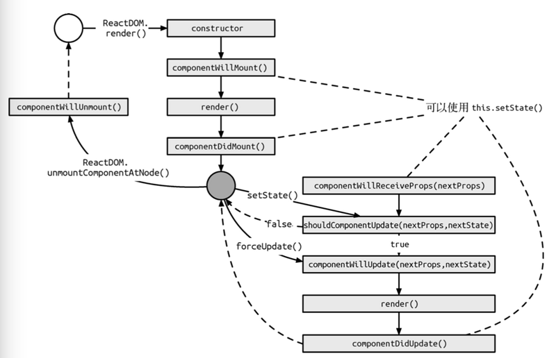
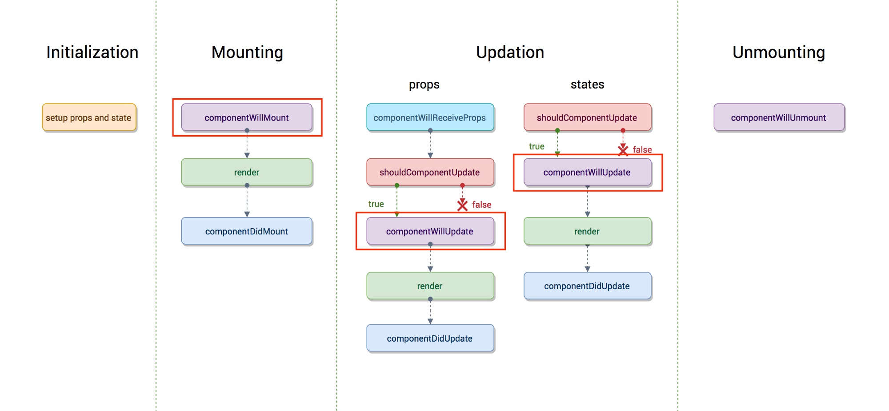
React源码
extends。继承了ReactComponent
component的render。render其实就是调用React.createElement方法。该方法返回一个ReactElement对象，即组件对象。
ReactDOM.render(component,mountNode).